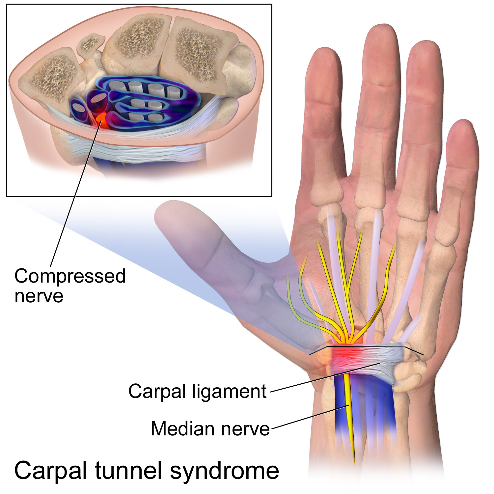

HMS
(current)

Hand and Wrist Microsurgery
Hand and wrist microsurgery is a special part of our practice. Upstate Orthopedics is proud to have the most talented hand surgeons in Central New York. They perform microsurgery procedures to repair injured hands and wrists, including tendon, nerve, blood vessel, skin, and joint damage. During hand microsurgery, our surgeons utilize specialized operating microscopes and precision instrumentation to perform intricate operations on blood vessels, nerves, and soft tissues. A high level of training and years of experience are necessary to perform successful microvascular surgeries. Wrist and hand surgeons are drawn to this specialty because of the unique challenges it presents. Microsurgery of the hand and wrist may be used to treat traumatic injuries such as a severed thumb or finger, severe laceration of a blood vessel, or a serious tendon or nerve injury.
Microsurgery procedures may include:
Hand and finger reconstruction to salvage severely injured fingers and wrists
Replantation to reattach severed thumbs and fingers
Free tissue transfer for increased healing of severe and non-united fractures
Nerve repair to restore motion and sensation